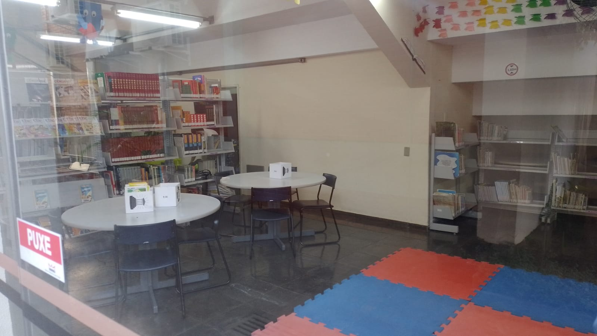
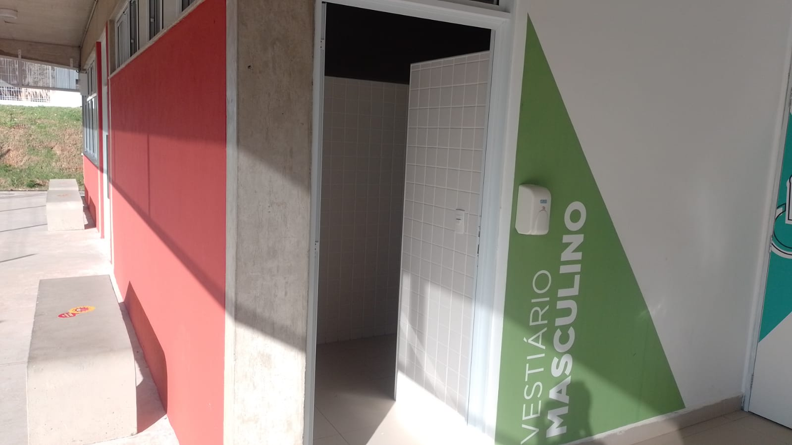
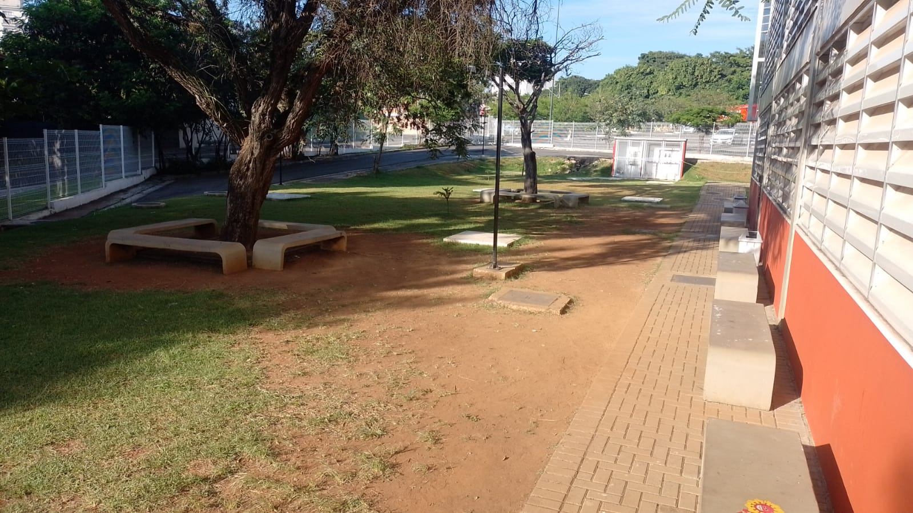
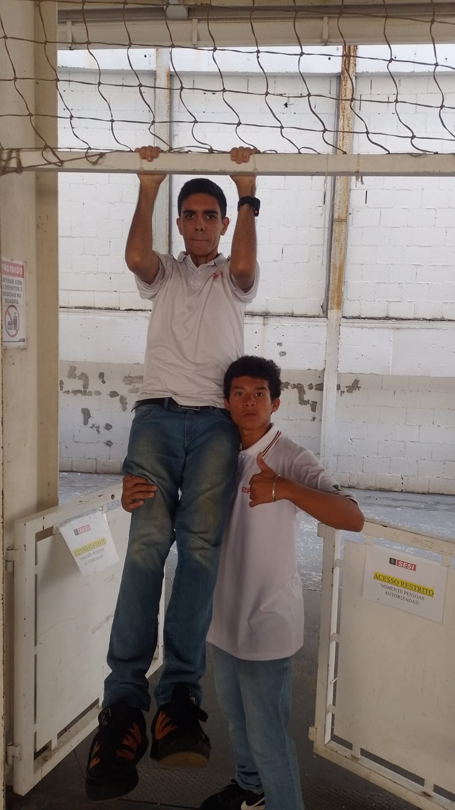
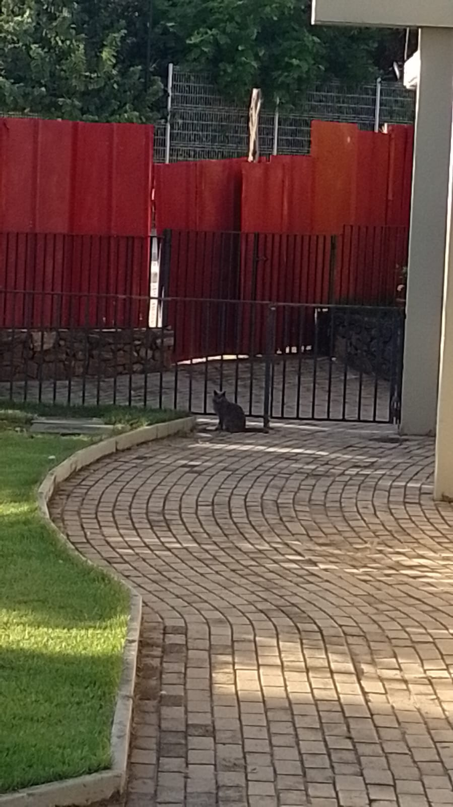

Criado em 1946, o SESI atende indústrias e trabalhadores em gestão da Segurança e Saúde no Trabalho (SST) e na promoção da saúde e educação dos trabalhadores, seus dependentes e comunidade.

A Imagem a baixo indica uns dos Sesis localizados em Sorocaba, que será comentado a baixo

Sesi 123 contem uma piscina que pode ter acesso pela a carteria do Sesi que além dela a tembém outras vantagens como as imagens abaixo.
Aqui alunos alem de praticas esportes durante a educação física podem se houver a carteira do Sesi pode pegar uma bola na secretaria e utilizar ela.
Como um estabelecimento comum, o sesi tambem possui 2 estacionamentos para funcionarios e responsaveis🚗
Álem disso tudo o sesi apresenta uma otima refeicao feita por nutricionistas, a comida que o sesi faz realmente e muito boa e saudavel
Sesi tem a oferecer mais recursos, confira:
Livros na biblioteca
Bainherios ao lado das salas
Ar livre:
"Amo Sesi, me divirto muito fazendo parkuor por aí, mas claro que os estudos vem em primeiro lugar"-Moises Carmargo da Silva
"O sesi e uma otima forma de preparar para trabalhar na indústria, o que é perfeito para mim"-Pietro Henrique Mena
"O Sesi é uma escola divertida, posso fazer amigos com todos os alunos e funcionarios, obrigado Sesi"-Murilo Rosa Zocca
"Au Au"-Gato